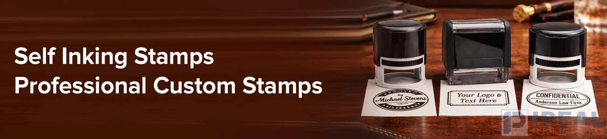

Custom Stamps in Lahore: The Smart Office Tool Every Business in Lahore Needs in 2026

In the fast-paced business world of today, efficiency is just as important as professionalism. When you're reviewing the documents you're approving, adding marks to invoices, or verifying documents using a trusted stamp, a good stamp will make your life easier and ensure that your workflow is organized.
This is the point at which self-inking stamps are available. They're small, easy to clean, and designed for fast, repeated stamping, without the requirement for an additional ink pad. If your business is frequently handling documents using a high-quality stamping machine, a business stamp Lahore solution will help you with everyday tasks. In Ideal Printers, companies can get robust and flexible customized stamps that are designed to meet the requirements of a professional office.
Why Self-Ink Stamps Are a Must for Modern Offices
Traditional rubber stamps need separate ink pads that are messy and uninspiring. Self-inking stamps, however, contrary to what they sound like, are equipped with an ink mechanism, which automatically re-inks the stamp following each press.
This basic technology makes them extremely useful in offices where they stamp papers frequently.
Key Advantages of Self-Ink Stamps
- The stamping process is quick and easy to clean.
- No need to buy an ink pad that is separate from the other.
- Clear and consistent impressions
- Small and simple to use
- Ink cartridges that last long and are refillable.
Businesses located in Lahore that deal with approvals, contracts, and official documents. An efficient stamping service for their company, the Lahore solution will significantly increase effectiveness. A company stamp Lahore businesses rely on is more than just a mark; it's a symbol of authenticity, approval, and professionalism on every document.
Custom Stamps That Match Your Business Identity
Every company has its own set of requirements regarding stamping. Certain companies require the corporate name as well as a registration number, and some require stamps to approve items such as "PAID," "APPROVED," or "RECEIVED."
This is where customized stamps could prove beneficial. They permit businesses to customize the stamp's appearance and can be used for:
- Name of business as well as the logo
- Contact information and address
- Signature-style stamps
- Date stamps
- Department stamps
By using custom stamps, businesses maintain consistency on official documents while also enhancing their image.
Common Uses for Company Stamps in Lahore
A lot of industries rely on stamps daily. A corporate stamp that is professionally designed in Lahore can be more than just an alternative for convenience; it's typically an official certificate.
Offices and Corporate Use
- Signature and verification of documents
- Approving invoices
- Internal documents to mark
Retail & Logistics
- The packaging slips are used to stamp
- Inventory documentation
- Delivery confirmations
Government & Legal Documentation
- Authentication stamps
- Verification of contracts
- The approval of documents issued by the government
In the workplace, in a place where there is lots of activity, self-inking stamps can help with repetitive tasks as well as be more effective.
Built for Durability and Everyday Use
A high-quality stamp should give many clear and crisp impressions without compromising quality. Quality Self-inking stamps are constructed with sturdy frames and ink pads that can be replaced, which ensures long-term use.
It means that businesses do not have to replace their stamps on a regular basis, which makes them an efficient tool to run office operations on a daily basis.
With Ideal Printers, the stamps are created precisely to guarantee high-quality impressions and long-lasting performance for professional settings.
Choosing the Right Custom Stamp
Before purchasing customized stamps, companies should take into consideration the following factors:
- Stamp Size: The size must be in line with how much information is required on the stamp.
- Stamp Shape: Square, Rectangular, and Oval stamps can often be employed based on the design.
- Ink Color: Black, blue, and red are among the most popular colors that are used in professional documents.
- Frequency of Use: For daily usage that is heavy, self-inking stamps are the best option.
The right choice of stamps makes sure that documents for business remain clean, professional, and simple to handle. For businesses that need quick solutions, Readymade stamps offer a fast and reliable way to stamp everyday documents.
Where to Get Self-Ink Stamps in Lahore
If your business requires an efficient custom-designed stamp or a reputable corporate stamp in Lahore, selecting an established printing service is crucial.
Ideal Printers offers top-quality self-ink stamps designed to be durable and clear, as well as for everyday office usage. With custom-designed designs and high-quality manufacturing, businesses can obtain stamps that match perfectly with their corporate branding and requirements.
Final Thoughts
In today's digital age, physical documentation continues to play an important part in daily business. A reliable self-inking stamp ensures that the approvals, verifications, and official marks are swift and professional.
No matter if you need a corporate stamp in Lahore to stamp official documents or customized stamps to use within your office, investing in the best stamping equipment can help you complete your daily tasks more efficiently and faster.
Contact Ideal Printers
- ?? Model Town Industrial Area 2 is located in Lahore, Pakistan
- ?? +92 30 0460 2749
- ?? idealprinter41@gmail.com